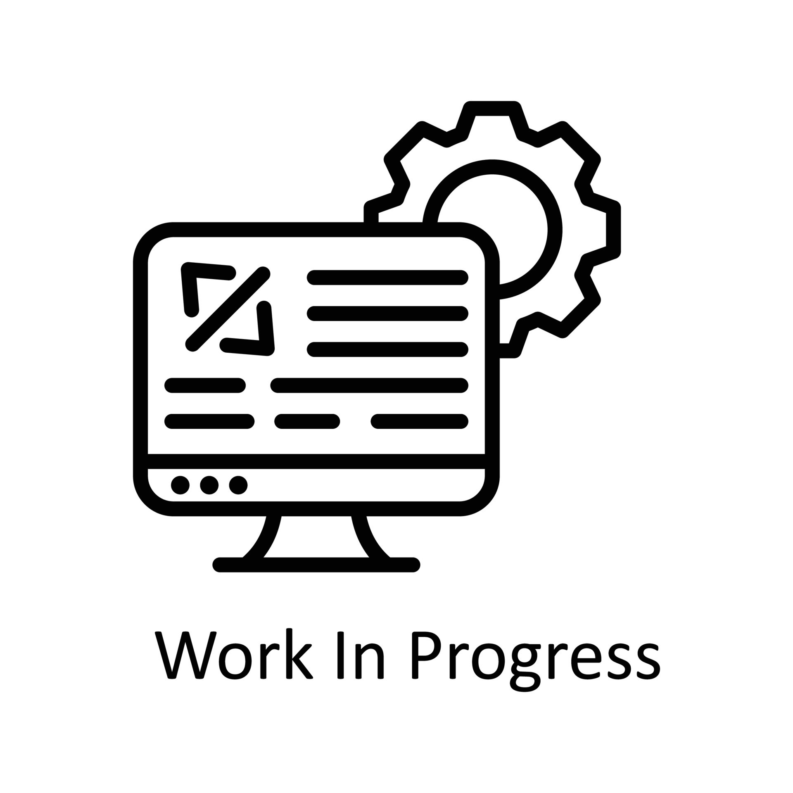

Python
Intermediate
Hello, I'm
I am a Doctor of Physical Sciences with experience in research on k-positive maps and theory of higher-order transformation with applications of representation theory.


I graduated from the University of Gdańsk. I possess advanced analytical skills, experience in working with scientific data, and practical knowledge of programming in Python and relational databases (SQL). Currently, I aim to transition to the IT sector, with a particular focus on data analysis, where I can leverage my abilities in rapid learning, solving complex problems, and a precise approach to analyzing needs. My experience in academic teaching and working under pressure in an international environment enables me to effectively collaborate with teams and clients, adapting to new professional challenges.


Intermediate
Basic
Intermediate
Basic
Basic
Intermediate

A repository containing test on the decomposability of positive maps in finite-dimensional matrix algebras.
This project contains two semidefinite-programming based tools written in MATLAB/CVX for the analysis of positive maps and entanglement properties of quantum states.
sdp_decomp.m)P and Q such that
the difference between the given Choi matrix and the combination
P + PartialTranspose(Q) is minimized in trace norm (via auxiliary PSD slack variables
Ptt and Qtt). The optimal objective value
dec = trace(Ptt + Qtt) quantifies how well the Choi matrix can be represented in this
structured form and can be used as a numerical indicator of (non-)decomposability of the underlying map.
SDP_PPT.m)PA, PS
on a bipartite d × d system.ρA.σ that are positive, normalized, and
PPT (positive under partial transpose), maximizing the overlap
Tr(PA σ) under the constraint
PA σ PA = Tr(PA σ) · ρA.pPPT, the optimal PPT state σ*, and
the value of the realignment criterion
∑ svd(Realignment(σ*)), which helps assess whether σ* is entangled.pPPT(ρA) < 1/2, the resulting optimal PPT state σ* is a
PPT entangled state, providing an explicit numerical example of bound entanglement.
Together, these tools illustrate how convex optimization and representation theory can be used to study positive maps, decomposability, and PPT entanglement in finite-dimensional quantum information theory.

A repository containing research on the Young-Yamanouchi basis and its applications in quantum information theory.
This program builds the representation-theoretic block structure of the permutation action
on a tensor power of a finite-dimensional quantum system.
For a fixed local dimension d and number of parties N, it:
N - 1 with at most d rows.
SN-1 representations (via standard tableaux) and their
multiplicities in the tensor space (via semistandard tableaux).
(ℂd)⊗(N-1).
Eij(μ) that encode the projectors and intertwiners
onto each irreducible subspace.
The output is a dictionary of operators that explicitly realizes the Young diagram / Schur–Weyl decomposition of the permutation representation on the tensor product space, together with the associated dimensions and multiplicities. This structure is useful in representation-theoretic approaches to quantum information, for example in port-based teleportation and symmetric channel analysis.

A repository containing a generator on color recursive maps/fractals.
This program generates high-resolution animations of the Clifford attractor, a nonlinear chaotic system known for producing intricate geometric structures. The animation evolves smoothly over time by dynamically varying one of the attractor parameters.
a(t) over time, causing the attractor to
morph between different chaotic geometries, creating
fluid, organic motion.
test_single_frame() function to preview the attractor
before generating the full animation.
The result is a smooth, neon-styled visualization of chaotic dynamics, suitable for artistic animations, mathematical demonstrations, or generative-art experiments.

An automation system that processes incoming emails with invoices and payment confirmations, extracts structured data from PDF attachments, and updates property accounting sheets.
This project implements a fully automated pipeline for handling property-related accounting via email. It continuously monitors an inbox, extracts data from received invoices, detects payment confirmations, and synchronizes everything with Google Sheets.
The project integrates email parsing, PDF text extraction, data normalization, and spreadsheet automation to create a fully hands-off accounting assistant for managing multiple rental properties.